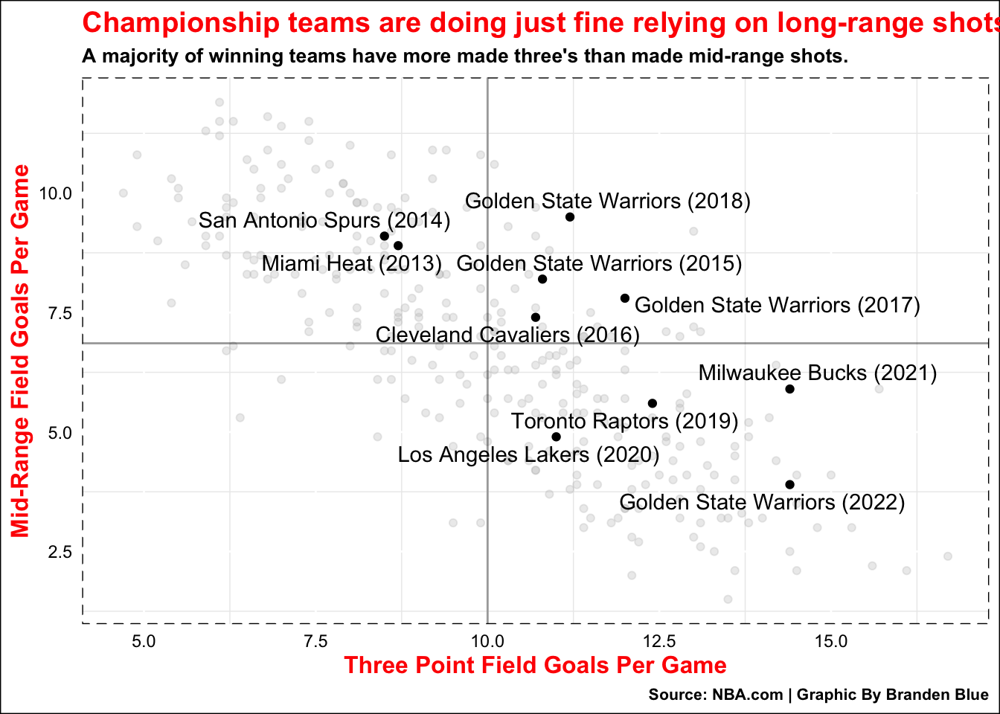
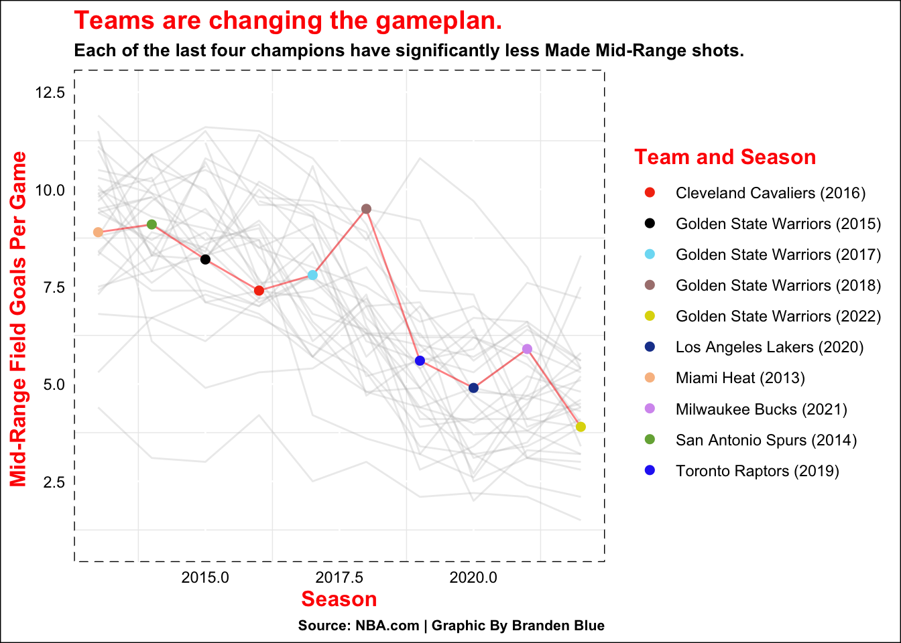
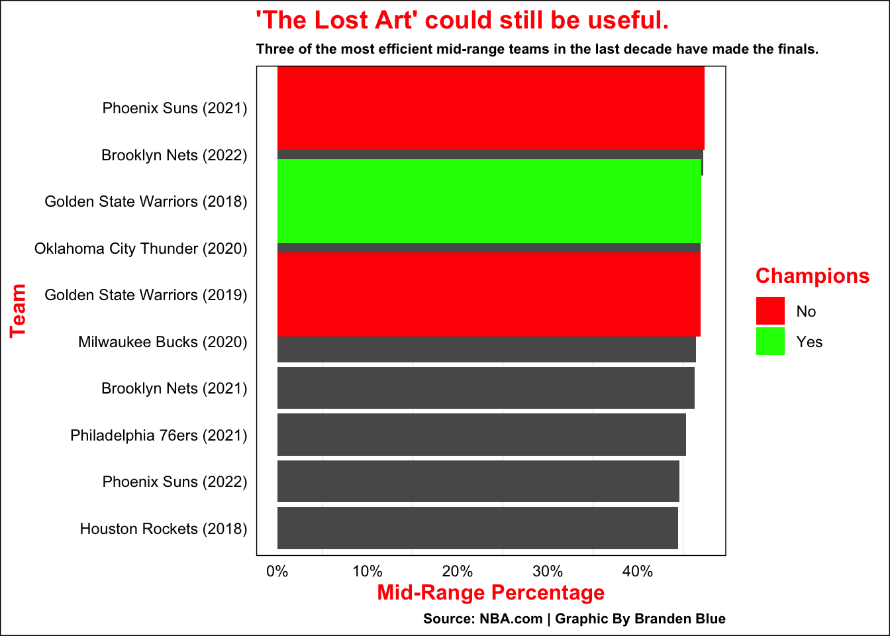
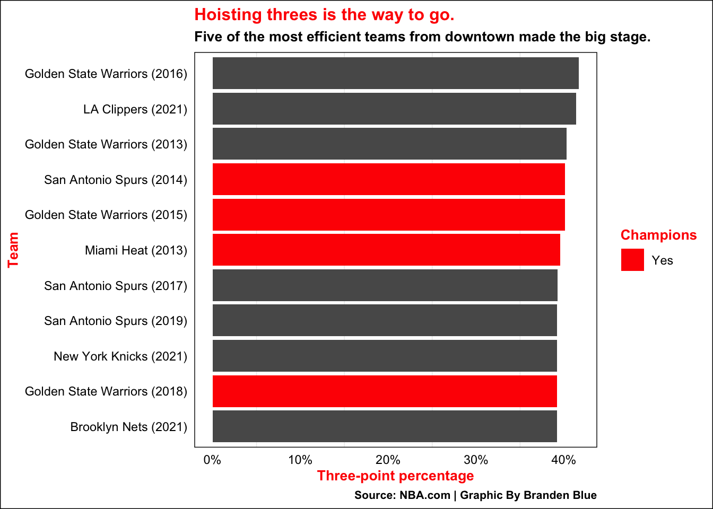

One of the most common ideas about winning teams is when the three-pointers are not falling, They can still be dangerous from anywhere on the floor.
These teams can get to the free-throw line, finish in the paint, or even get to the mid-range. However, there’s evidence that suggests a balance between the three and the mid-range is not always needed to win championships.
Code
library(tidyverse)library(ggrepel)TeamShooting <-read_csv("NBAShootingSplits2.csv") %>%filter(Season !=2023, TEAM !="FinalsChamps")TeamShootinW_Champs <-read_csv("NBAShootingSplits2.csv") %>%filter(Season !=2023, TEAM =="FinalsChamps")TeamShooting2 <-read_csv("NBAShootingSplits2.csv") %>%filter(Season !=2023, TEAM !="FinalsChamps")UpdatedFGPCT <- TeamShooting2 %>%mutate(`NMIDFG%`=`MIDFG%`*.01,`N3P%`=`3P%`* .01) %>%arrange(desc(`NMIDFG%`)) Top3PCT <- UpdatedFGPCT %>%filter(Season !=2023) %>%arrange(desc(`3P%`)) %>%top_n(10, `3P%`)TopMDRPCT <- UpdatedFGPCT %>%filter(Season !=2023) %>%arrange(desc(`MIDFG%`)) %>%top_n(10, `MIDFG%`) GSW2019_PHX2021_GSW2018 <- UpdatedFGPCT %>%filter(`Team and Season`%in%c("Phoenix Suns (2021)", "Golden State Warriors (2019)", "Golden State Warriors (2018)")) Top3PctFinalsTeam <- UpdatedFGPCT %>%filter(`Team and Season`%in%c( "Golden State Warriors (2015)", "San Antonio Spurs (2014)", "Miami Heat (2013)", "Golden State Warriors (2018)")) noChampionship <- UpdatedFGPCT %>%filter(`Team and Season`!=c("Miami Heat (2013)", "San Antonio Spurs (2014)", "Golden State Warriors (2015)", "Cleveland Cavaliers (2016)", "Golden State Warriors (2017)", "Golden State Warriors (2018)", "Toronto Raptors (2019)", "Los Angeles Lakers (2020)", "Milwaukee Bucks (2021)", "Golden State Warriors (2022)" ))UpdatedFGPCT <- TeamShooting2 %>%mutate(`NMIDFG%`=`MIDFG%`*.01,`N3P%`=`3P%`* .01) %>%arrange(desc(`NMIDFG%`)) ChampTeams <- TeamShooting %>%filter(Champions =="Yes") %>%arrange(desc(MIDFGM))
Code
ggplot() +geom_point(data = TeamShooting, aes(x =`3FGM`, y = MIDFGM), color ="grey", alpha=.3) +geom_point(data = ChampTeams, aes(x =`3FGM`, y = MIDFGM), color ="Black") +geom_text_repel( data = ChampTeams, aes(x=`3FGM`, y= MIDFGM, label=`Team and Season`)) +geom_vline(xintercept =10.001, alpha = .4) +geom_hline(yintercept =6.857, alpha = .4) +labs(title ="Championship teams are doing just fine relying on long-range shots.",subtitle ="A majority of winning teams have more made three's than made mid-range shots.",x ="Three Point Field Goals Per Game", y ="Mid-Range Field Goals Per Game", caption ="Source: NBA.com | Graphic By Branden Blue") +theme_minimal() +theme(title =element_text(color ="Red", size =12, face ='bold'),plot.background =element_rect(fill ="white"),plot.subtitle =element_text(color ="black", size =10),plot.caption =element_text(color ="black", size =8),panel.border =element_rect(linetype ="dashed", fill =NA),panel.grid.major =element_line(colour ="white"),axis.text =element_text(color ="black"))

Code
ggsave("image.png")
The San Antonio Spurs and the Miami Heat were the most balanced teams as they each made around nine mid-range and three-point field goals per game.
The Warriors dynasty is known for having some of the greatest offenses ever. It’s fitting that they would have winning teams who were above the average in mid-range field goals, while still making a high volume of three-point shots.
Their backcourt consists of two of the greatest three-point shooters in Klay Thompson and Steph Curry, then in 2016 they added four-time scoring champ Kevin Durant. He is known for getting anything he wants at all three-levels and goes to the mid-range frequently. He was the Finals MVP of those 2017 and 2018 teams, so his effect on the team is clear.
It’s after his departure in 2019 where the ball started to roll farther..
The 2022 Golden State Warriors had the lowest mid-range field goals at 3.9 per game, while also having the highest three-pointers made at 14.4 per game. As a team they are the biggest example that balance is not a necessity in today’s NBA. They are the most recent champions, but even the teams that won before them are demonstrating this philosophy.
Code
ggplot() +geom_line(data = TeamShooting, aes(x = Season, y = MIDFGM, group = TEAM), color ="grey", alpha = .3) +geom_line(data = TeamShootinW_Champs, aes(x = Season, y = MIDFGM, group = TEAM), color ="Red", alpha =.5) +geom_point(data = TeamShootinW_Champs, aes(x = Season, y = MIDFGM, color =`Team and Season` ), size =2) +scale_x_continuous(limits =c(2013, 2022)) +scale_y_continuous(limits =c(1, 12.5)) +scale_color_manual(values =c("#F53811", "#000000", "#7CDDF4", "#AA817F", "#DED70A", "#1D429A", "#F8BE90", "#D59CEF", "#75AD43", "#2935F3" )) +labs(y ="Mid-Range Field Goals Per Game ", title ="Teams are changing the gameplan.",subtitle ="Each of the last four champions have significantly less Made Mid-Range shots.",caption ="Source: NBA.com | Graphic By Branden Blue" ) +theme_minimal() +theme(title =element_text(color ="Red", size =12, face ='bold'),plot.background =element_rect(fill ="white"),plot.subtitle =element_text(color ="black", size =10),plot.caption =element_text(color ="black", size =8),panel.border =element_rect(linetype ="dashed", fill =NA),panel.grid.major =element_line(colour ="white"),axis.text =element_text(color ="black"))

It has become a trend among teams to take less mid-range shots and phase it out of their game plan all across the league. However, it is especially apparent among the teams with rings.
After 2014 there was a noticeable decline, until it rose again in 2016. Once 2019 hit these numbers sagged off dramatically and it’s clear that teams are moving from the need to have a balance in scoring. Even though it’s dying out, teams having an effective mid-range is not a bad thing.
Code
ggplot() +geom_bar(data = TopMDRPCT, aes(x =reorder(`Team and Season`, `NMIDFG%`), weight =`NMIDFG%`)) +geom_bar(data = GSW2019_PHX2021_GSW2018, aes(x =reorder(`Team and Season`, `NMIDFG%`), weight =`NMIDFG%`, fill =`Champions` )) +geom_bar() +coord_flip() +labs(title ="'The Lost Art' could still be useful.",subtitle ="Three of the most efficient mid-range teams in the last decade have made the finals." , x="Team", y="Mid-Range Percentage",caption ="Source: NBA.com | Graphic By Branden Blue") +scale_y_continuous(labels = scales::percent) +scale_fill_manual(values =c("Red", "Green")) +theme_minimal() +theme(title =element_text(color ="Red", size =12, face ='bold'), plot.background =element_rect(fill ="white"),plot.subtitle =element_text(color ="black", size =8),plot.caption =element_text(color ="black", size =8),panel.border =element_rect(linetype ="solid", fill =NA),panel.grid.major =element_line(colour ="white"),axis.text =element_text(color ="black"))

The Phoenix Suns as well as the 2018 and 2019 warriors all made the finals with some of the highest mid-range efficiency. Having a team that’s a three-level threat still makes it tough for some teams to guard and scheme around. Unfortunately for the “lost art”, only one of these teams actually won the championship.
Results could have been different had Durant not torn his achilles in 2019, but the 2018 Warriors were the only ones to go all the way. It seems it might be a wiser idea for franchises to spend more resources on three-point shooting and the rings back it up
Code
ggplot() +geom_bar(data = Top3PCT, aes(x =reorder(`Team and Season`, `N3P%`), weight =`N3P%`)) +geom_bar(data = Top3PctFinalsTeam, aes(x =reorder(`Team and Season`, `N3P%`), weight =`N3P%`, fill =`Champions`)) +geom_bar() +coord_flip() +labs(title ="Hoisting threes is the way to go.",subtitle ="Five of the most efficient teams from downtown made the big stage." , x="Team", y="Three-point percentage",caption ="Source: NBA.com | Graphic By Branden Blue") +scale_fill_manual(values =c("Red", "Green")) +scale_y_continuous(labels = scales::percent) +theme_minimal() +theme(title =element_text(color ="Red", size =10, face ='bold'),plot.background =element_rect(fill ="white"),plot.subtitle =element_text(color ="black", size =10),plot.caption =element_text(color ="black", size =8),panel.border =element_rect(linetype ="solid", fill =NA),panel.grid.major =element_line(colour ="white"),axis.text =element_text(color ="black"))

Five of the most efficient teams from behind the three-point line made it to the biggest stage in basketball. Four of those five managed to bring the Larry O’Brien back home and parade around their cities in front of thousands of fans. All five teams listed were close to winning. The 2016 Golden State Warriors were one game away from completing their record breaking 73-9 season before they blew a 3-1 lead.
It’s also worth noting that the 2018 warriors were top 10 in efficiency from mid-range and behind-the-line, but the line-up they had consisted of talent not many teams can replicate.
Typically long-forwards like Durant are the ones who hit these the most, because of all the bodies in the paint. Combine that with him being an all-time talent, the numbers are going to reflect that. Even though they had the highest mid-range field goals made at 9.5 per game, they still were making about 11.2 threes per game.
Having a solid mid-range game to fall back on is never an issue, but the league is prioritizing three-point shooting. Nowadays everyone from the barely 6 foot point guards to the 7’5” Victor Wembanyama’s can make threes. Going all on in on deep shooting is not a bad idea when almost everyone can do it now.
In a league where the The 2022 Warriors won a ring shooting only four mid-range shots a game.
Sometimes you can live by the three and thrive by the three.